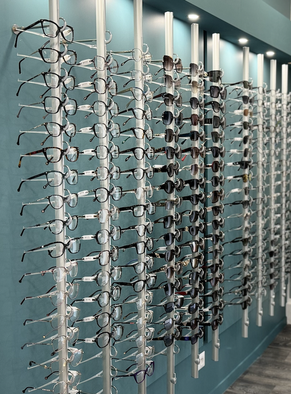

Bien vous conseiller est notre priorité

Votre opticien expérimenté vous guidera à travers le processus, de la sélection de montures à l'ajustement final, garantissant ainsi un confort optimal et une vision optimale.
Large choix de montures
Découvrez notre vaste collection de montures élégantes et modernes provenant de fabricants renommés. Que vous recherchiez un style classique, contemporain ou avant-gardiste, nous avons des options pour tous les goûts et tous les budgets.
Verres de fabrication française
Nous privilégions la qualité et la fiabilité. C'est pourquoi nous proposons des verres de fabrication française, reconnus pour leur excellence optique. Nos opticiens vous conseilleront sur les meilleures options pour répondre à vos besoins spécifiques.
Lentilles de contact et produits d'entretien
Pour ceux qui préfèrent les lentilles de contact, nous proposons une gamme complète de lentilles de haute qualité. De plus, notre sélection de produits d'entretien vous garantit une hygiène optimale pour une expérience sans tracas.
Prendre soin de vos lentilles
- Lavez-vous les mains
- Respectez le calendrier de remplacement
- Utilisez des produits adaptés
- Ne dépassez pas la durée de port recommandée
- Enlevez vos lentilles avant de dormir
- Évitez le contact avec l'eau
- Gardez votre étui propre
- Respectez les rendez-vous de suivi
- Ne prêtez pas vos lentilles


Prendre soin de vos lunettes
- Nettoyez régulièrement
- Ajustez-les correctement
- Ne les laissez pas au soleil
- Retirez-les correctement
- Consultez régulièrement un professionnel de la vue
- Gardez votre étui propre
- Protégez-les pendant les activités sportives
- Évitez les variations de température
- Gardez-les loin des enfants et des animaux
En suivant ces conseils d'entretien, vous prolongerez la durée de vie de vos lunettes de vue et assurerez une vision claire et confortable. Si vous avez des questions spécifiques, n'hésitez pas à les poser à votre opticien Wave Optique.